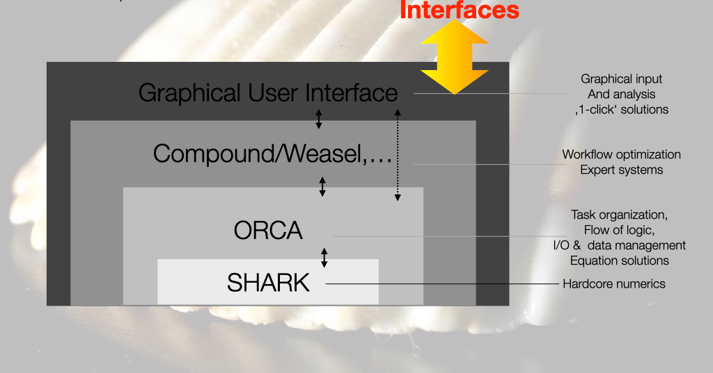
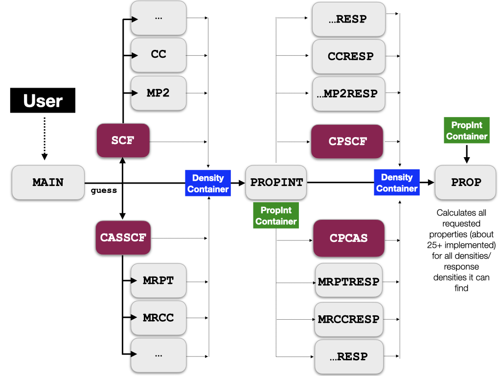

ORCA 的体系结构（The Architecture of ORCA）¶
本章我们描述 ORCA 内部结构的总体特征。这些知识对于用 ORCA 进行计算并非必需。不过，它有助于理解哪些模块按何种顺序被调用，以及为何按这一顺序进行。
ORCA 源代码的结构（The structure of the ORCA source code）¶
ORCA 的源代码大体上分为三部分：
1) 主程序。
2) “ORCA 工具库（ORCA tool library）”的代码。
3) 各个模块的代码。
ORCA 工具库中的代码被编译成一个库文件，随后与所有 ORCA 模块链接。各个模块的代码可以使用库中的一切内容，但模块不应链接或使用主程序或任何其他模块的代码。这种代码组织方式确保了模块的可维护性，也避免了复杂而不必要的相互依赖，否则最终将无法用新代码替换模块。
ORCA 的壳层结构（The shell structure of ORCA）¶
代码和信息流的整体组织可以看作一个壳层（shell）结构，其中一个壳层就是一层具有明确定义的功能、并且与其上下壳层之间具有明确定义接口的软件。

壳层的最低层是 SHARK 积分程序包。它是程序的“发动机”，负责大多数计算密集型任务以及几乎所有涉及基函数积分的部分。这包括计算所有单电子和双电子积分、构造 Fock 及类 Fock 矩阵，以及使用各种基组和核（kernels）进行积分变换。SHARK 代码的大部分独立于 ORCA 其余的源代码基础设施。
SHARK 之上的一层是实际的 ORCA 源代码。ORCA 通过接口与用户交互，并编排整个计算流程。目前，它也执行计算密集型任务，例如构造、对角化和处理 Fock 算符，求解大型线性方程组，在相关计算中构造 sigma 向量、密度等类似任务。ORCA 源代码通过一小组 DRIVERS 与 SHARK 交互。这些驱动程序既包含 ORCA 的数据结构，也包含 SHARK 的基础设施。DRIVERS 调用真正的 SHARK 函数（ORCA 只在少数几处直接调用 SHARK），最重要的是，DRIVERS 负责在各种近似的“丛林”中找到正确的路径。我们指的是它们处理必要的基组、辅助基组、网格、积分近似、溶剂化、相对论、点电荷等。
将这些重要且极易出错的任务集中在少量有良好文档的例程中，提供了一种高度透明的方式来识别和妥善维护处于程序核心的功能。
在 ORCA 软件层之上，是编排工作流的工具。工作流通常由若干相互依赖的计算步骤组成，这些步骤随后被组合成一个有意义的化学结果。例如，可以用 DFT 泛函优化几何结构并在同一水平上计算零点和热学校正，接着在耦合簇水平上进行单点计算，其中可能包含（也可能不包含）MP2 水平的芯相关校正或完全基组外推。这类任务以及许多其他任务，例如在一组分子测试集上运行系列计算，或在给定测试体系上排列计算选项（如泛函或基组），都可以用工作流工具来解决。在 ORCA 内部，有非常强大的 compound 脚本语言来完成和组织这类任务。在商业分支上，FAccTs 开发了 Weasel 工具，它是一个强大且高度可靠的工作流管理器。
在最上层，可以设想有一个图形用户界面（Graphical User Interface，GUI），帮助构建分子并简化计算的运行和结果的分析。目前，ORCA 尚无专用的 GUI。有许多免费和商业解决方案可以与 ORCA 接口。这种接口形式由 ORCA 生成的 orca_2json 接口和性质文件（property file）所支持。我们希望这一接口的透明性能激励 GUI 开发者提供不断改进的、与 ORCA 接口的 GUI。我们不排除 ORCA 将来某个时候拥有自己 GUI 的可能性。
主/从概念与调用顺序（The master/slave concept and the calling sequence）¶
在 ORCA 内部，代码遵循“主/从（master/slave）”概念，即主程序被允许了解每个模块的一切，而模块则不允许了解主程序的任何信息。因此，主程序是编排整个 ORCA 运行以及与用户交互的软件部分。不过，主程序不应自行执行计算密集型任务，甚至不应自行执行并行化任务。
一次 ORCA 计算从读取并分析 ORCA 输入文件开始。该输入的合理性由一个精心设计的“maincheck”例程检查。很显然，ORCA 各种特性的可能组合数远远超过用实际可行的工作量所能检查的范围。不过，多年来 maincheck 例程已经发展到能够检测最常见的无效或不一致输入关键词的组合，并采取相应措施（可以是更改某些参数，也可以中止作业）。
通过 maincheck 后，计算中使用的基组和坐标就完全确定了。此时便可初始化 SHARK 积分程序包，随后由它执行大部分计算密集型任务。
第一个被调用的模块是 orca_startup。该模块负责计算单电子积分，例如 HCORE 矩阵和重叠矩阵、RI 计算中的度量矩阵、直接 SCF 的预筛选矩阵，以及在常规积分运行中可能还包括双电子积分。
下游的下一个模块是 orca_guess 程序。该模块的任务是从这些轨道产生一组初始分子轨道以及初始密度矩阵。为此有若干选项，其中最常见的是模型密度猜测（PMODEL）或从先前的计算读取轨道（MOREAD）。在后一种情况下，计算可以使用不同的几何结构和/或不同的基组，但原子的数目、性质和顺序必须与目标体系一致。
第三步中，程序分支到 SCF 或 CASSCF 模块（orca_leanscf 或 orca_casscf）。这些模块产生收敛的轨道和自洽场能量以及单粒子密度矩阵。后者存储在 DensityContainer 中，这是一个集中式的密度存储设施，在计算结束后仍会保留，用户可以访问。
计算的下一步是调用各种 post-SCF 程序，例如 orca_mp2、orca_mdci 或 orca_autoci。NEVPT2 和 CASPT2 由与 orca_casscf 集成的代码计算。这些计算相关能和激发态等许多其他性质。
程序接下来可以走许多不同的路径，例如几何优化、嵌入计算或分子动力学等等。与其详细讨论每一种可能的路径，不如描述一下 ORCA 内部分子性质的计算。
分子性质的计算（The calculation of molecular properties）¶
对于分子性质的计算，ORCA 拥有一套相当独特且高度精简的基础设施，专注于所计算性质中的共性，这些共性独立于所使用的底层电子结构方法。
ORCA 性质计算涵盖三类定性上不同的性质：
1) 响应性质（Response properties）。这些是可以表述为总能量导数的性质。
2) QDPT 性质。这些是通过准简并微扰理论（quasi-degenerate perturbation theory，QDPT）计算的性质。这相当于在底层电子结构方法给出的若干个根上对包含外场和相对论修正的哈密顿量进行对角化。
3) 激发态性质：至少目前而言，这些是体系不同电子态之间的跃迁矩。
响应性质（Response properties）¶
大量性质可以写成总能量的导数。这些是一阶性质：
其中，\(P_{\mu\nu}^{\pm}\) 是一阶电子（'+'）或自旋（'-'）密度，\(\widehat{h}_{M}\) 是描述所关注性质的算符（例如偶极矩算符），基组为 \(\left\{\mu\right\}\)。
二阶性质为：
这里重要的量是 \(\frac{\partial P_{\mu\nu}^{\pm}}{\partial N}\)，即电子密度或自旋密度对微扰 \(N\) 的一阶导数（或“响应”）。可以证明微扰 \(M\) 和 \(N\) 的顺序无关紧要，因此可以选择更方便的微扰来计算响应密度。
必须指出，响应性质的方程总是可以化为这种形式，无论计算是 Hartree-Fock、DFT、MP2、耦合簇、CASSCF 还是全 CI 波函数。
鉴于性质方程具有相当的普遍性，创建一种充分利用这些相似之处的基础设施是合乎逻辑的。在 ORCA 中，所有密度和响应密度存储的中心位置是 DensityContainer。它在整个实际计算过程中被大量使用，并以 BaseName.densities 的形式留在磁盘上，可用于可视化。
在计算流程方面，主程序包含驱动这一计算的全部逻辑。它首先驱动 SCF 以及可能的 post-SCF 计算。完成后，SCF 程序收集后续将需要哪些性质积分的信息，并调用性质积分程序 orca_propint，由它计算必要的积分并将其存储在另一个中心存储容器——“性质积分容器（property integral container）”中。
计算的下一步是主程序确定哪些性质需要响应密度。它收集这些微扰并调用响应模块。对于 SCF 波函数（HF 或 DFT），这就是 orca_scfresp 程序。该程序将请求的微扰分成不同类型，例如实对称、虚反对称、三重态等。然后它同时求解所有类型微扰的响应方程。这会带来很大的效率提升，因为在耦合微扰 SCF（CP-SCF）方程的左端，无论实际微扰如何，所需的积分都是相同的。因此，将给定类型的所有微扰合并处理比逐个处理高效得多。这会带来很高的效率提升，尤其是对于像 NMR 参数这样需要核相关微扰的性质。
对于若干其他电子结构方法，如 MP2、CASSCF 或 AutoCI，相应模块可以运行在“响应模式”下，此时它们不再求解能量方程，而是取用能量运行中确定的振幅，并将它们与性质积分一起用于产生响应密度。
响应密度随后也存储在密度容器中。此时，计算实际性质所需的一切都已具备——该任务由 orca_prop 执行。
orca_prop 程序的工作方式是遍历密度容器并寻找适合计算所请求性质的密度。一旦找到合适的密度（或未微扰密度与响应密度的组合），它就会计算该性质。例如，如果在同一计算中进行了 SCF、MP2 和 CCSD 计算，并要求计算所有三种密度，orca_prop 将计算三个偶极矩并把它们并排打印出来。

这种组织方式的一个有益副作用是它非常适合未来的扩展。如果 ORCA 中出现了能够产生密度以及可能的响应密度的新方法，那么该方法的性质将完全可用，无需程序员编写任何额外的代码。它还确保所有性质都以一致的方式计算，并具有一致的输出格式。
所有性质计算的结果都存储在计算结束后保留的中心性质文件中。有意读取性质的用户，应从性质文件或其 JSON 转换中读取。
QDPT 性质（QDPT properties）¶
有些性质不是作为能量导数计算的，而是由准简并微扰理论计算的。在这一方法中对 QDPT 矩阵进行对角化：
其中 \(\left|\Psi_{I}^{SM}\right\rangle\) 是给定方法的、能够产生能量为 \(E_{I}\) 的激发态的根。例如，这些可以是 TD-DFT 根、CASSCF 根、带有 NEVPT2 或 CASPT2 能量校正的 CASSCF 根、MRCI 根、EOM-CCSD 根等，而 \(\widehat{H}_{SOC}\) 是自旋-轨道耦合（spin-orbit coupling，SOC）算符，\(\widehat{H}_{SS}\) 是电子-电子自旋-自旋耦合算符，\(\widehat{H}_{LB}\) 是分子 Zeeman 算符等。在实践中，只计算主分量 \(M=S\)（即 \(\Psi_{I}^{SS}\)），并使用 Wigner-Eckart 定理生成所需的矩阵元。
对角化产生作为非相对论或标量相对论本征态的线性组合的复值相对论本征态。利用这些本征态可以计算相对论密度或跃迁密度，随后可用于计算磁性质或“相对论”光学或磁光光谱。
该过程显然存在截断误差，因为实践中只能计算有限数目的根。不过，结果表明，只要底层电子结构方法给出合理的结果，QDPT 生成的性质往往与实验数据吻合得相当好。
在 ORCA 中，所有 QDPT 性质都在一致的基础设施中计算，因此结果的打印和报告也是一致的。
激发态性质（Excited state properties）¶
与 QDPT 基础设施密切相关的是“单光子光谱”（one-photon spectroscopy，OPS）基础设施。这是一套以一组跃迁密度作为输入来协调跃迁矩计算的基础设施。这些跃迁密度可能已存储在磁盘上，也可能是即时生成的。与 QDPT 基础设施类似，这些跃迁矩在 ORCA 所有能够产生激发态的模块中以一致的方式生成。
精确的场/物质耦合哈密顿量为：
其中 \(k\) 是频率为 \(\omega\) 的辐射的波矢，\(\varepsilon\) 是其偏振。\(A_{0}\) 是辐射强度，\(r\) 是电子坐标，\(t\) 是时间。
矩阵元 \(\left\langle\Psi_{I}^{SM}\mid dle|\sum_{i}{A(r_{i},t)}\mid dle|\Psi_{J}^{S'M'}\right\rangle\) 的求值相当于生成“精确的”场-物质跃迁矩。这可以通过在相应的 ORCA 输入块中设置标志 DoFullSemiClassical = true 来请求。
余弦项的级数展开给出熟悉的电偶极、电四极、磁偶极等贡献。有意思的是，直接求值电偶极项会给出规范无关的“速度”形式。它们与更熟悉的“长度”形式偶极矩阵元的关系为：
如果所用电子结构方法满足一定条件，长度和速度跃迁矩求值的结果在基组极限下应当一致。实践中它们通常吻合得不太好，即便使用大基组也是如此。
为了生成电偶极长度和速度形式以及更高阶矩的求值，可以在触发相应激发态计算的 ORCA 输入块中使用关键词